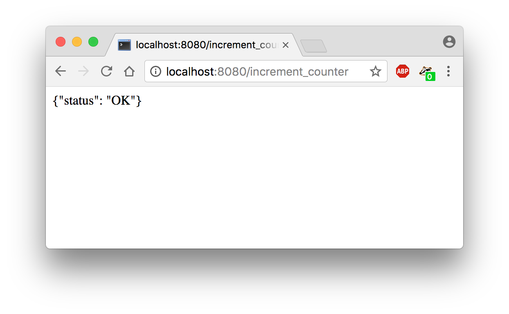
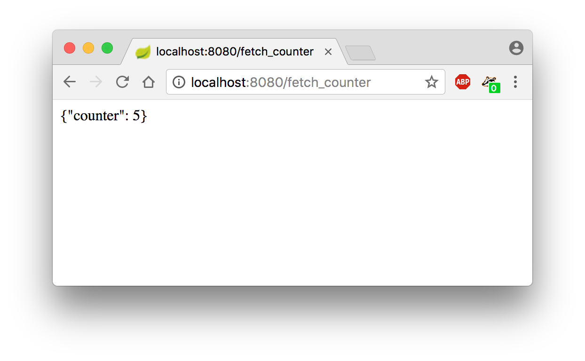

Chapter 6 - Dynamic webpages using Ajax
Serving JSON objects, Querying web services asynchronously, Dynamic web pages.
I- Serving JSON objects
JSON is a text format that enables to represent structured data. A JSON object looks like the following:
In order to support JSON in a python script, import the following library:
You can then use the following methods:
Now, modify the existing main.py so that it creates the database at startup:
II- Serving JSON objects
In this Section we will implement an new Flask application containing two python functions:
- one function is in charge of incrementing a counter
- one function is in charge of serving the value of the counter
The following snippet implements those two functions:
Browsing 5 times on the /increment_counter URL and one time on /fetch_counter URL should result in the following screenshots
 III- A quick introduction to asynchronous web pages
Until now we developped static web pages : each time a client was requesting a web page, the server was producing a new HTML document. By using Ajax (Asynchronous JavaScript and XML), it possible to create dynamic web pages that will continuously get data from server, and self update.
By using the jQuery javascript framework, it is possible to request the server via some javascript code:
IV- Developping a first dynamic page
In this section we will develop a first complete dynamic web application that enables to asynchronously increment a counter by clicking on button.
main.py:
templates/home.html: